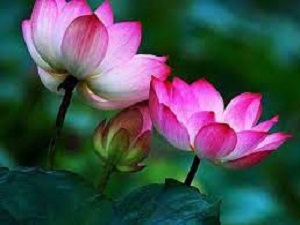

About Lotus:
Lotus plants are adapted to grow in the flood plains of slow-moving rivers and delta areas. Stands of lotus drop hundreds of thousands of seeds every year to the bottom of the pond. While some sprout immediately, and most are eaten by wildlife, the remaining seeds can remain dormant for an extensive period of time as the pond silts in and dries out. During flood conditions, sediments containing these seeds are broken open, and the dormant seeds rehydrate and begin a new lotus colony.
It has a very wide native distribution, ranging from central and northern India (at altitudes up to 1,400 m or 4,600 ft in the southern Himalayas[3]), through northern Indochina and East Asia (north to the Amur region; the Russian populations have sometimes been referred to as "Nelumbo komarovii"), with isolated locations at the Caspian Sea.[4] Today the species also occurs in southern India, Sri Lanka, virtually all of Southeast Asia, New Guinea and northern and eastern Australia, but this is probably the result of human translocations.[4] It has a very long history (c. 3,000 years) of being cultivated for its edible seeds,[4] and it is commonly cultivated in water gardens.[3] It is the national flower of India and Vietnam. The lotus is often confused with the true water lilies of genus Nymphaea, in particular N. caerulea, the "blue lotus". In fact, several older systems, such as the Bentham & Hooker system (which is widely used in the Indian subcontinent) refer to the lotus by its old synonym of Nymphaea nelumbo.[citation needed]
While all modern plant taxonomy systems agree that this species belongs in the genus Nelumbo, the systems disagree as to which family Nelumbo should be placed in, or whether the genus should belong in its own unique family and order. According to the APG IV system, N. nucifera, N. lutea, and their extinct relatives belong in Proteales with the protea flowers[5] due to genetic comparisons. Older systems, such as the Cronquist system, place N. nucifera and its relatives in the order Nymphaeles based on anatomical similarities.[6] The roots of lotus are planted in the soil of the pond or river bottom, while the leaves float on the water's surface or are held well above it. The flowers are usually found on thick stems rising several centimeters above the leaves. The leaf stalks (petioles) can be up to 200 cm (6 ft 7 in) long, allowing the plant to grow in water to that depth,[7] and a horizontal spread of 1 m (3 ft 3 in).[8] The leaves may be as large as 80 cm (31 in) in diameter, while the showy flowers can be up to 30 cm (12 in) in diameter.[9] Researchers report that the lotus has the remarkable ability to regulate the temperature of its flowers to within a narrow range just as humans and other warmblooded animals do.[10] Roger S. Seymour and Paul Schultze-Motel, physiologists at the University of Adelaide in Australia, found that lotus flowers blooming in the Adelaide Botanic Gardens maintained a temperature of 30–35 °C (86–95 °F), even when the air temperature dropped to 10 °C (50 °F). They suspect the flowers may be doing this to attract coldblooded insect pollinators. Studies published in the journals Nature and Philosophical Transactions: Biological Sciences were in 1996 and 1998 important contributions in the field of thermoregulation, heat-producing, in plants. Two other species known to be able to regulate their temperature include Symplocarpus foetidus and Philodendron selloum.[citation needed]
Lotus seeds can remain viable after long periods of dormancy. In 1994, a seed from a sacred lotus, dated at roughly 1,300 years old ± 270 years, was successfully germinated.[11][12] The traditional Sacred Lotus is only distantly related to Nymphaea caerulea, but possesses similar chemistry. Both Nymphaea caerulea and Nelumbo nucifera contain the alkaloids nuciferine and aporphine.[citation needed] The genome of the sacred lotus was sequenced in May 2013.[13][14][15]
Other uses Lotus thread is used to weave a special robe for the Buddha at Inle lake, Myanmar. The distinctive dried seed heads, which resemble the spouts of watering cans, are widely sold throughout the world for decorative purposes and for dried flower arranging. In Asia, the petals are sometimes used for garnish, while the large leaves are used as a wrap for food, not frequently eaten (for example, as a wrapper for zongzi). A unique fabric called lotus silk, from the lotus plant fibers, is produced only at Inle lake, Myanmar and in Siem Reap, Cambodia. This thread is used for weaving special robes for Buddha images called kya thingan (lotus robe).